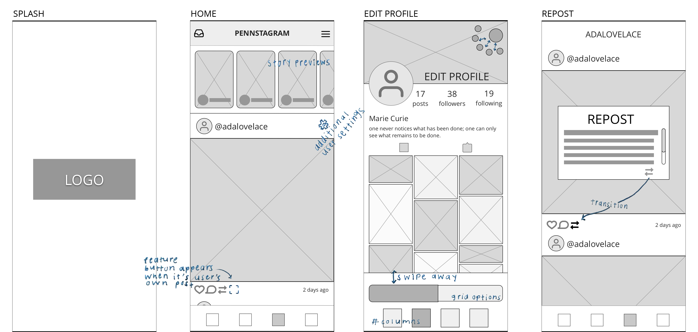

Pennstagram
Instagram feature integration

UI/UX Designer
Sketch, Principle, Photoshop
July 2019 - Aug. 2019
Summary and Goals
Instagram is one of today's largest photo- and video-sharing social networking applications. As a master's candidate at the University of Pennsylvania (Penn), I created Pennstagram, which adds features to the popular app, guided by user research.
- Team size: 1
- Target audience: Instagram users, 18-35 year-olds
- Number of research participants: 83 over two phases
- Research methods: Interviews, questionnaires
User Needs and Research
To understand what features would make the best photo-sharing application, I surveyed 58 people. Below is a clickable sample of the data collected.
Why do you use Instagram?
average response
"I wish Instagram had ______."
36%
used the words "
52%
said they have considered

Research Insights and Follow-up Phase
More Profile Customizability
One takeaway was that users want more variety in their profiles,
as indicated by the high number of people who wished to add some version of easily-installable profile themes.
Thus, I drafted the following design solutions:
multiple layout options for grid
header image
background color
option to show/hide likes
I conducted a second research phase with 32 participants, who were asked to provide feedback and rank the following grid styles:
Hover each artboard to view insights into the grid style.
Quotes from Users:
"I like the dual columns because the posts are extra big.""I would never change from the 3-column layout since it would mess up my 'theme'"
"I always wondered why everything was in 3's but now i see that nothing else looks quite right."
"The 4-column option shows more pics at once"
Overall user rankings: #2 of 5 (3-column), #4 of 5 (4-column), #5 of 5 (2-column)


Quotes from Users:
"I would use this to post progress pictures of my embroidery in the small squares, then the finished version I'm selling in the big ones.""This is a nice balance between the normal squares layout (too boring) and the scrapbook layout (too messy)."
Overall user ranking: #3 of 5
(nearly a tie for #2)
Quotes from Users:
"I've always disliked the squares because sometimes, my favorite part of the picture isn't in the center, so you can't see it in the thumbnail.""Instagram without squares feels a little strange to me, but i could probably get used to it."
"It looks more organic. i love it!"
"I think it's too messy/disorganized for my OCD but i can see how others would like it. I just prefer things that are more uniform."
Overall user ranking: #1 of 5
I concluded that users tended to value at least one of three charateristics within their grid:
- familiarity
- uniformity
- dissimilarity
For this reason, I eliminated "featured squares" as a standalone option and opted to give users the choice to feature a post when creating it or viewing it later on. However, when users edit their profiles, they are only given the options of classic squares or scrapbook. From there, they can choose between 1 and 4 columns, inclusive.
Clearer Navigation, Icons, and Interactions
Further, during my first iteration of research, several participants noted difficulties navigating Instagram. During the second phase, I asked for specific interactions with the app that users found frustrating or confusing:
There's a camera in the corner, and I always tap it to make a new post, but it leads to the screen to create a new story.
When I want to see posts I've liked, I have to Google how.For context, it's under profile > settings > account > posts you've liked.
While I did not want to focus too much on restructuring Instagram's existing settings, I kept this user feedback in mind when adding more features and menu items. I aimed to use clear, unambiguous icons and micro-interactions to give users feedback. Additionally, when users edit their profiles, they see the impact of each modification in real-time rather than making edits and switching back to their profile to see the result.
Additional Wireframes

Features Added
- Story Previews: 24-hour stories display the time remaining and a preview to help users decide if they want to view them.
- Profile Color + Header: Many users stick to color schemes, "themes" or "aesthetics" to give their profile a cohesive look, with some saying they will sacrifice the look of an inidividual post when editing if it will better fit the overall look of their grid.
- Grid Styles: Another customizability option allows users to select a classic squares or scrapbook style grid with 1 to 4 columns.
- Repost Photos: A common thread among my research participants was that they prefer to use apps without needing external apps to complete simple tasks. Thus, an option to repost from others, keeping or modifying the original caption. It also gives users another way to interact and feel more like "friends" than "followers."
- Featured Posts: These allow users to highlight posts that are more special than the rest, while breaking up the monotony of same-sized thumbnails within their grid if they value dissimilarity.
Final Prototype
This video demo shows the features mentioned above in action.What I Learned
Instagram attracts creatives, and as such, users want to feel involved with the look and feel of their profiles. Rather than using apps like Instagram as a one-size-fits-all platform, many are beginning to use them as personal or business sites or mini-blogs, which are typically highly customizable in their appearance.
However, giving users too many options to customize could make them feel overwhelmed. Restructuring how choices are presented can be done without reducing the number of options.
Although I have extensive experience conducting interviews due to my work in journalism, this project reminded me of the value of an in-person interview when rather than solely gathering information through online questionnaires. Participants gave more natural, candid responses that went in-depth and allowed me to ask follow-up questions or seek clarification.
If I were to do this project again, I would conduct one more research phase with a 5-7 participants and a focus on usability testing.
Just for Fun: Branding
Although I am not a graphic designer, I enjoyed creating a logo and color scheme for pennstagram, both of which have meaning.